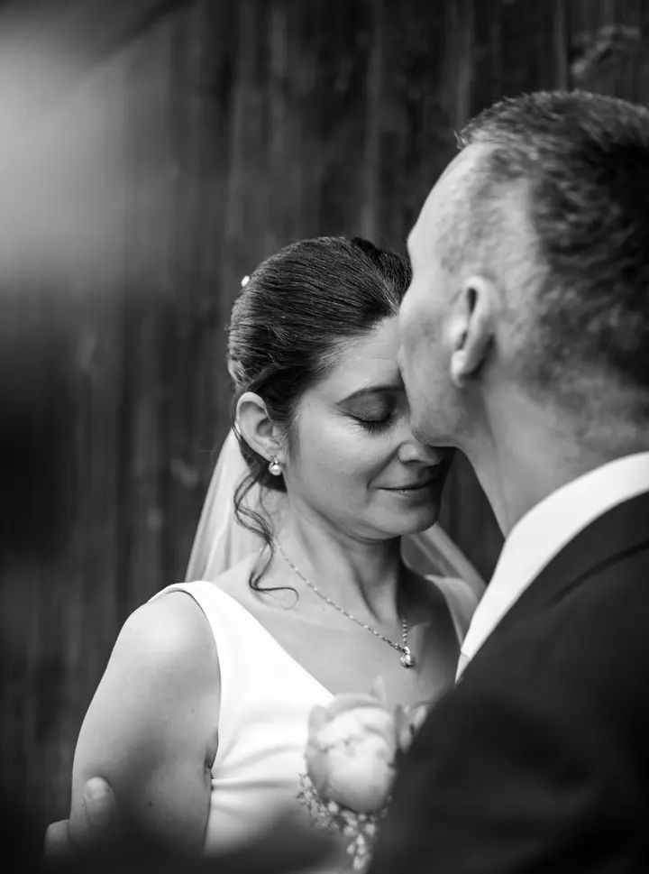
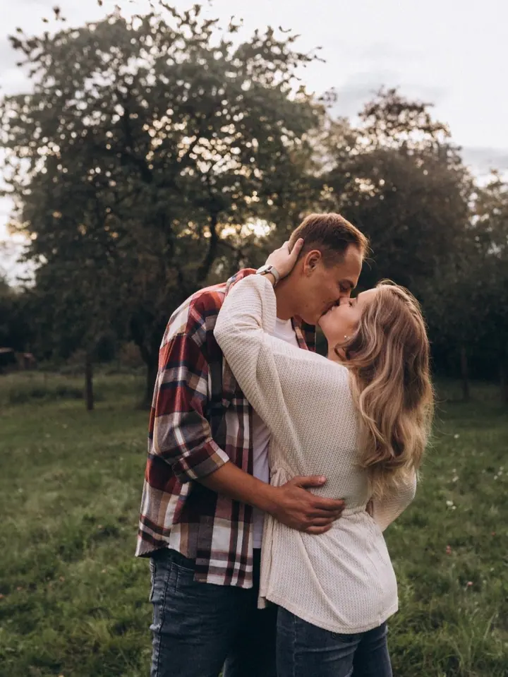
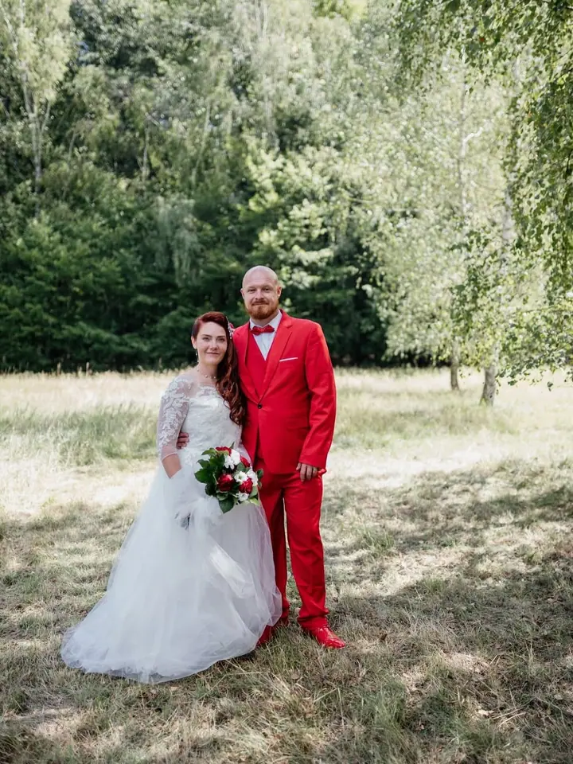

Svatby
Fotím obřad, gratulace a vaše párové fotky, nebo celý den od příprav po volnou zábavu. Svatební balíčky začínají na 6 500 Kč.

Jmenuji se Barbora Kašparová a fotím rodiny, páry a svatby v Hradci Králové a po celých východních Čechách. Nebudu vás nutit do křečovitých póz, protože nejraději zachyc…
Rezervovat termínJmenuji se Barbora Kašparová, ale klidně mi říkejte Barb. Jsem rodinná a lifestylová fotografka z Hradce Králové a fotím po celých východních Čechách. Když zrovna nefotím, učím na prvním stupni základní školy.


Chci, abyste se během focení cítili uvolněně a užili si ho. Místo vybíráme spolu. Ráda poznávám nová prostředí a zároveň vám ukážu i svá oblíbená místa. Pokud chcete, přijedu za vámi domů a nafotíme lifestylové fotky.
V létě nejraději fotím navečer, kdy slunce pomalu zapadá a fotky mají zvláštní atmosféru. Upravuji je co nejpřirozeněji a každou vybranou fotku dostanete barevně i černobíle.
Co fotím
Fotím obřad, gratulace a vaše párové fotky, nebo celý den od příprav po volnou zábavu. Svatební balíčky začínají na 6 500 Kč.
Focení pro zamilované páry i nejlepší kamarádky. Uvolněná procházka, při které se nemusíte nutit do křečovitých póz.
Portréty jen pro vás, ve městě nebo v přírodě. Jde mi o přirozený výraz, ne o strnulé pózování.
Společná procházka venku nebo lifestylové focení přímo u vás doma. Balíčky začínají na 2 000 Kč.
Postup
Nejdřív si domluvíme termín a společně vybereme místo. Může to být příroda, město nebo váš domov.
Focení trvá většinou 30 až 60 minut. Čas ale nestopuji, takže končíme, až budeme spokojení všichni.
Do 3 pracovních dnů vám pošlu náhledy a vy si z nich vyberete fotky, které vám upravím.
Upravené fotky vám pošlu přes Úschovnu v plném rozlišení, barevně i černobíle. Odkaz můžete poslat dál rodině i přátelům.
Otázky
Nejlépe vypadá oblečení v jemných přírodních barvách, jako je khaki, hnědá, béžová, šedá nebo hořčicová, a bez vzorů a potisků. Pokud si nevíte rady, pošlete mi své návrhy a doladíme to spolu.
Rodinné, párové a portrétní focení začíná balíčkem MINI za 2 000 Kč s 10 upravenými fotkami. Nejoblíbenější je balíček STANDARD za 3 000 Kč. Svatby fotím od 6 500 Kč.
Neupravené fotografie neposkytuji. Vybrané fotky vám upravím (ořez, jas, kontrast, barvy a retuš) a dostanete je barevně i černobíle.
Ano, můžete koupit dárkový poukaz na focení. Platí minimálně 6 měsíců.